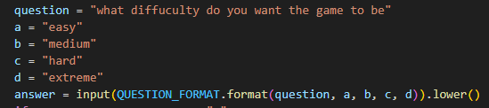
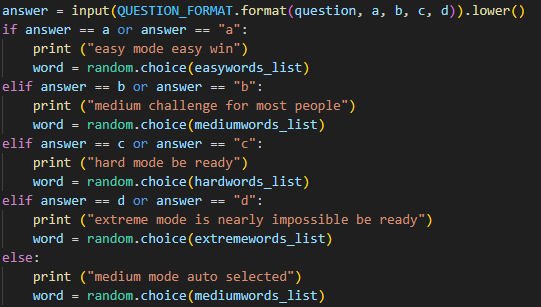
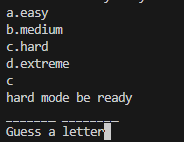

| code |
Expectation |
Output |
| welcoming |
it welcomes the user to the game |
 |
| ask what diffuculty |
it will ask the user what diffuculty they are wanting to play |
 |
| chooses the difficulty |
it will choose the diffuculty based on the users answer |
 |
| blanks |
it display blanks where the letters would be |
 |
| Test/Input |
Expectation |
Output |
| "reilly" |
it welcomes reilly to the game |
 |
| "a" |
it selects easy mode on the diffuculty |
 |
| "b" |
it selects medium mode on the diffuculty |
 |
| "c" |
it selects hard mode on the diffuculty |
 |
| "d" |
it selects extreme mode on the diffuculty |
 |
| "else" |
if the user doesnt type a b c or d select medium as default |
 |
| "capital letter" |
if users typer capital C or A etc does it still work |
 |
| "word display" |
once you chose the word is selected display blanks for words |
 |
| improvementss |
Expectation |
Output |
i forgot to take progress/improvement screenshots
| "add elif statements to questiions" |
to make changes so the computer doesnt have to check everything |
|
| "i added blanks to the code" |
id will display blanks where the letters would be |
 |